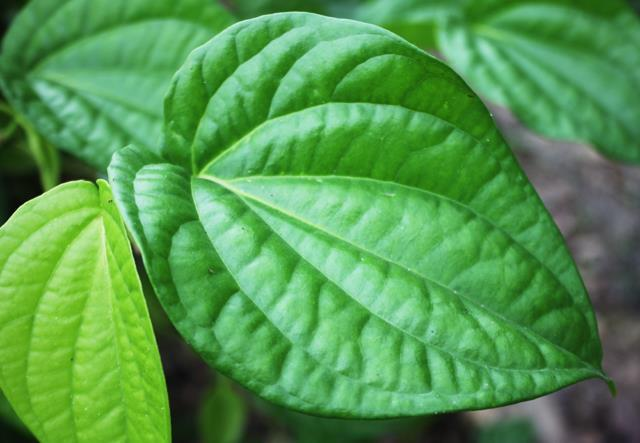
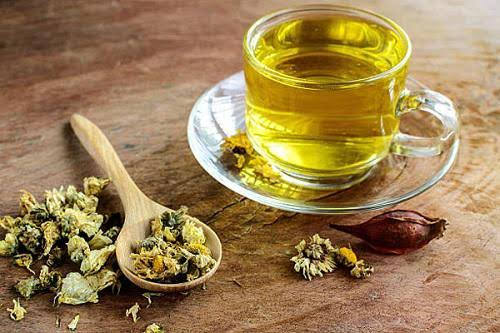

🌱 Trà Gừng
Gừng tươi thái lát, pha với nước nóng. Thường được dùng như một thức uống ấm.

☘ Nước Rau Má
Rau má rửa sạch, xay lấy nước uống. Là một loại đồ uống phổ biến ở Việt Nam.

🌿 Trà Tía Tô
Gừng tươi thái lát, pha với nước nóng. Thường được dùng như một thức uống ấm.

🍾 Rượu thuốc
Đa dụng, có nhiều bài thuốc. Các dụng hoạt huyết, khu phong, tán hàn, giảm đau, và giúp dẫn thuốc đi vào các kinh lạc.

🍃 lá trầu
Sát khuẩn (răng miệng, phụ khoa), giảm đau (xương khớp) và trị đầy hơi5.
🌵 Nha đam
Nha đam là loại cây mọng nước quen thuộc, thường được dùng để chế biến chè, nước giải khát và nhiều món ăn thanh mát. Nhờ dễ trồng và dễ sử dụng, nha đam được nhiều gia đình ưa chuộng.

🌼 Hoa Cúc
Hoa cúc thường được dùng để pha trà nhờ hương thơm dịu nhẹ và màu sắc đẹp mắt. Đây là loại thảo dược quen thuộc, gắn liền với văn hóa và đời sống của người Việt.